Seu perfil
Contas
Seu perfil
Contas
Suas ideias salvas
Keysos 見習い
Seguindo 0
Pins
Pastas
Colagens

Organize suas ideias
Os Pins são as faíscas da inspiração, e as pastas são onde eles ficam salvos. Crie pastas para organizar seus Pins do seu jeito.
Acompanhe o que inspira você
As pastas permitem organizar em coleções os Pins que você salva. Comece de um conjunto abaixo ou crie o seu.


Ideias de tatuagem
14 Pins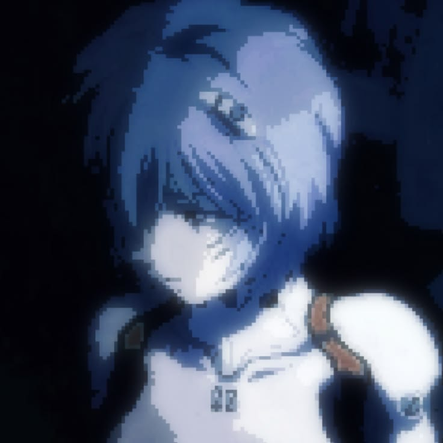

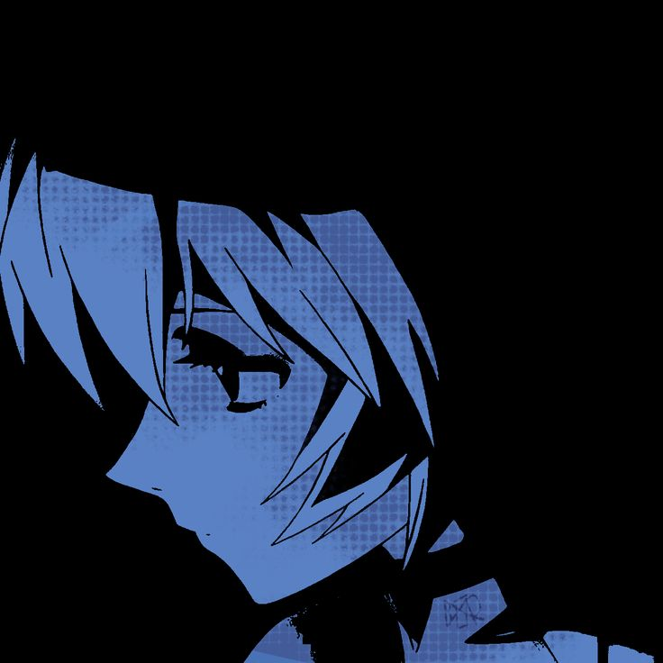
Personagens de anime
12 Pins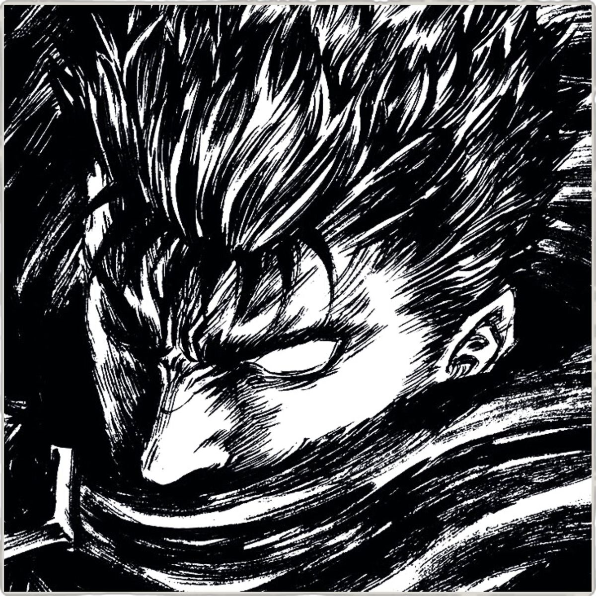
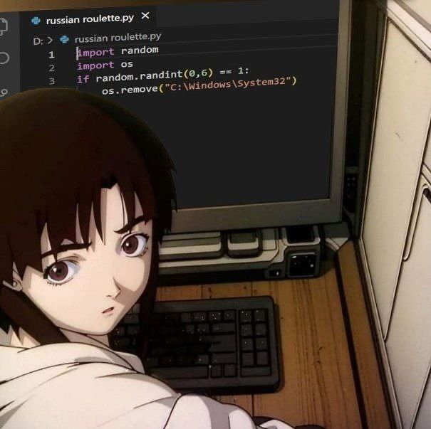
Fotos de animais...
9 Pins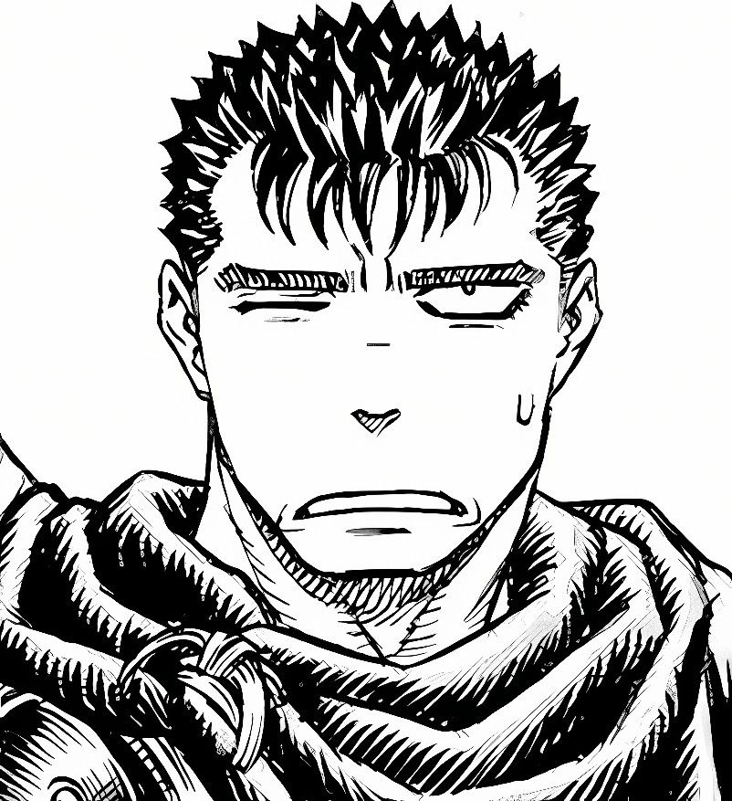
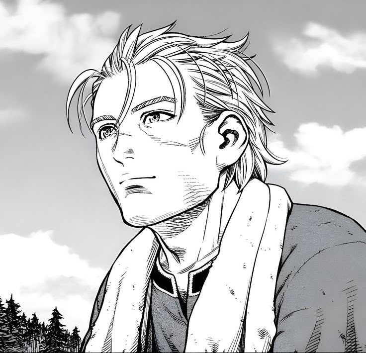
Fotos de animais...
6 Pins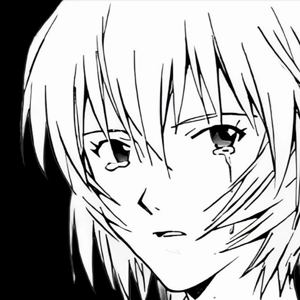
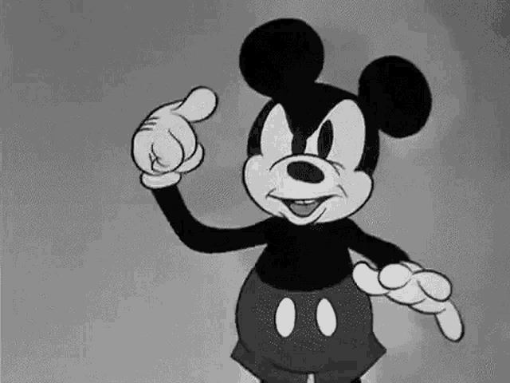
Rei ayanami
5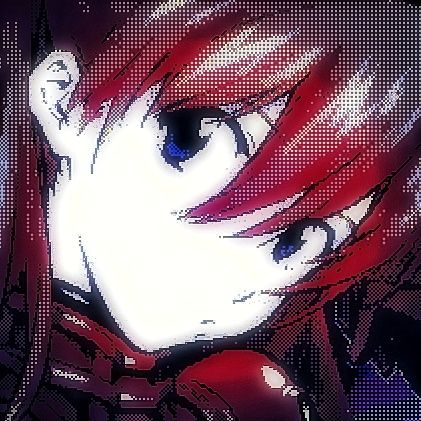
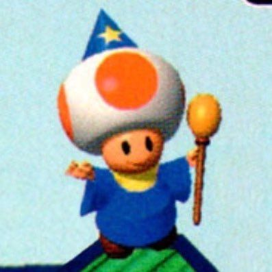
Mangá bleach
5 Pins
Tatuagem de dragão
4 PinsSuperhomem
4 Pins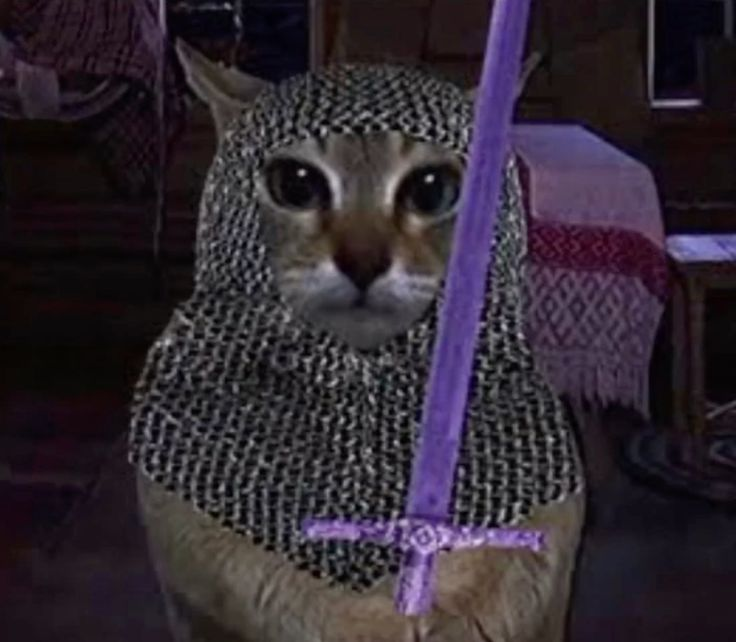
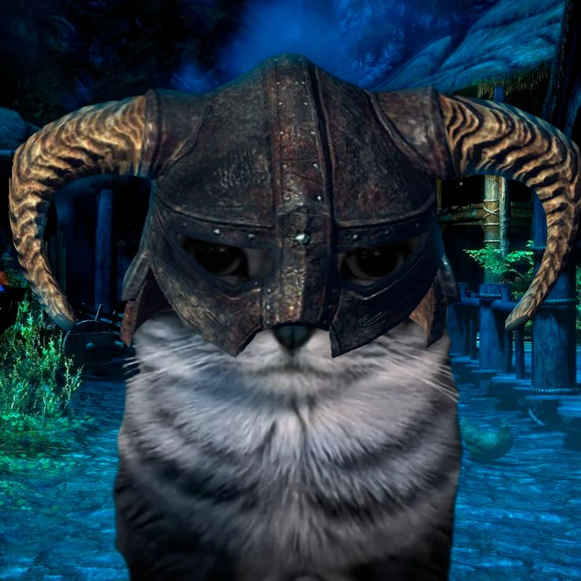
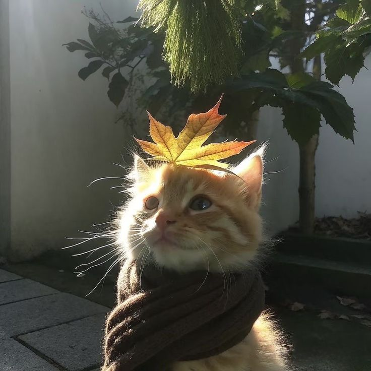
Logotipo Instagram
3 Pins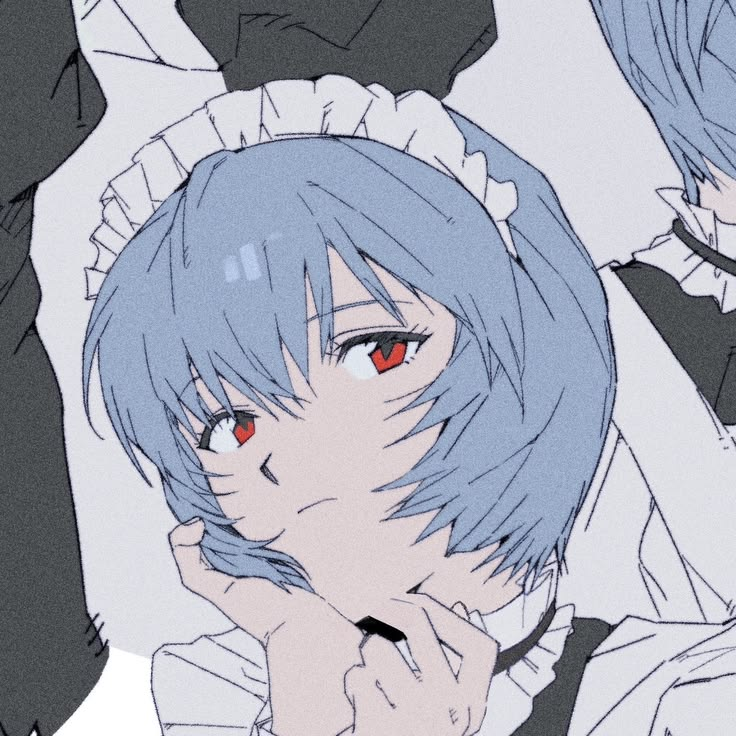
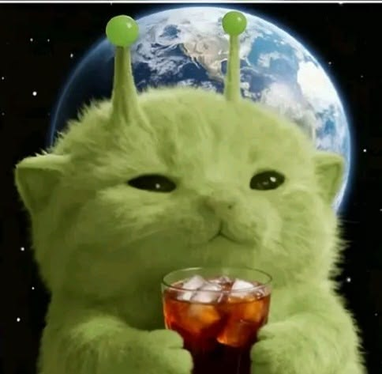
Terraria
3 PinsIdeias não organizadas
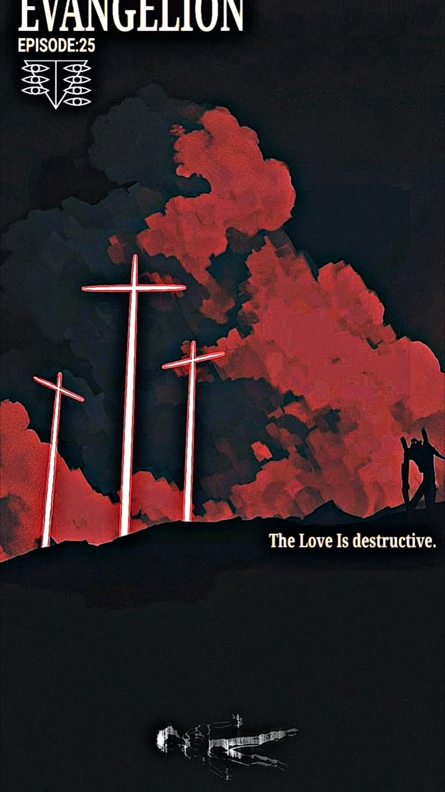
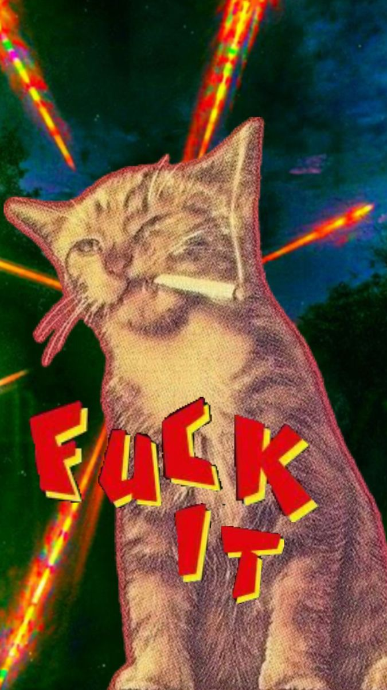
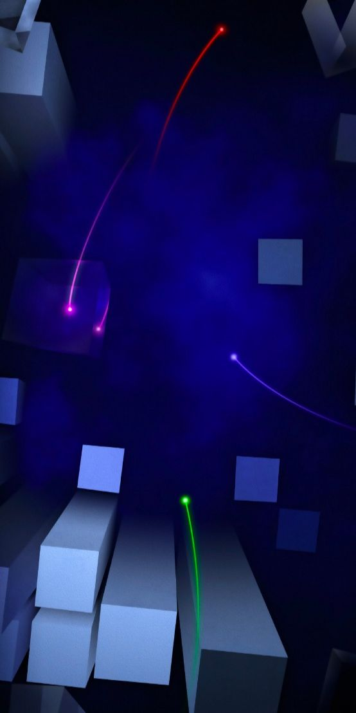